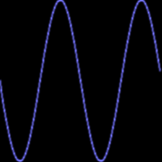

General description¶
The fbpy module is an API for drawing in the framebuffer on Linux machines. It was conceived as part of an audio player project based on the raspberry pi computer and wolfson pi audio interface. I needed a low-level graphics library for visualizing audio data (scope, phase,...). I also wanted to gain some programming skills, like writing c libs for python and some kernel stuff. So this module is by no means an attempt to make a better graphics lib with fancy hardware acceleration or anythin or making something original. I think it is use able though and by examining the source, it might serve as a form of documentation if you want to make something like this yourself. That is why I publish it. Oh, and of course because I support open source hardware and software, the ‘firmware’ of my audio player should be available as source :)
Module documentation¶
- class fb.Colors¶
Some prefab colors, to make life easier.
Food for Pixelstyle. e.g.:
- class fb.Polys¶
Multi poly class. Each surface has an instance of these. draw3dpolys method of surface will use it.
- class fb.Surface(*args)¶
This is the main class, it generates a drawing surface.
On first invokation, it will generate a surface which encompasses the entire screen automaticaly and it will open the framebuffer device. The classmethod close will close it. Subsequent instances will need arguments defining size and position.
- static addpoly(*args, **kwargs)¶
just a test for the moment I have to store this in this instance... and then on draw3dpolys should I call the drivers addpoly!!!
addpoly(<x array>,<y array>, )
- static arc(<tuple>, <radius 1>, <radius 2>, <start seg>, <end seg>, <no seg>)¶
couple of examples here:
>>> import fbpy.fb as fb >>> main = fb.Surface() >>> sub = fb.Surface((0,0), (200,200)) >>> sub.clear() 0 >>> sub.pixelstyle = fb.Pixelstyles.faint >>> sub.arc((100,100), 60, 90, 0, 50, 100) 0 >>> sub.pixelstyle = fb.Pixelstyles.sharp >>> sub.arc((100,100), 40, 40, 30, 90, 100) 0 >>> sub.grabsilent("./source/images/arc.png") 0

- blit(<filename>)¶
will put the PNG <filename> in the current surface
>>> import fbpy.fb as fb >>> main = fb.Surface() >>> sub = fb.Surface((100,100),(600,600)) >>> sub.blit("../examples/cylon.png") 0 >>> sub.grabsilent("./source/images/gottherobot.png") 0

- static circle(<tuple>, <radius>, <segments>)¶
Will draw a ...
>>> import fbpy.fb as fb >>> main = fb.Surface() >>> sub = fb.Surface((0,0), (200,200)) >>> sub.clear() 0 >>> sub.circle((100,100),0.5, 100) 0 >>> sub.grabsilent("./source/images/circle.png") 0

- clear()¶
will clear the temp buffer
- clearframebuffer()¶
will clear the framebuffer but not the temp buffer. Use clearscreen for a clear screen, or clear to clear the temp buffer
- clearscreen()¶
will clear the screen, that is, swap buffer + actual frameb
- drawpolys()¶
Draw a bunch of polygons
>>> import fbpy.fb as fb >>> import numpy as np >>> main = fb.Surface() >>> main.clear() >>> sub = fb.Surface((100,100),(200,200)) >>> sub.clear() 0 >>> x1 = np.arange(0,1,0.02) >>> y1 = 0.5*np.sin(x1*2*np.pi)+0.5 >>> z1 = np.zeros(np.size(x1)) >>> x2 = np.arange(0,1,0.02) >>> y2 = 0.5*np.cos(x2*2*np.pi)+0.5 >>> z2 = np.zeros(np.size(x2)) >>> sub.addpoly(x1,y1,z1) 0 >>> sub.addpoly(x2,y2,z2) 0 >>> sub.drawpolys() 0 >>> sub.trafo.rotate(np.pi/2) 0 >>> sub.drawpolys() 0 >>> sub.grabsilent("./source/images/polys.png") 0

- dumppolys()¶
print informationa about the currently loaded multipoly struct.
- get_raw()¶
returns an raw bitmap array of the current window, use set_raw to put the bitmap back.
sprite = main.get_raw() main.set_raw(sprite)
- grab(<filename>)¶
grabs current frame into file <filename>.png
- grabsequence(<filename>)¶
grabs current frame into file with filename <filename#>
where # is an automatich counter. the output will be e.g.: screenshot0001.png, screenshot0002.png, ...
you can use e.g.
nerd@wonka: ~/tmp$ avconv -i <filename>%04d.png -c:v huffyuv <yourmoviename>.avito convert the sequence to a movie. You can also use ofcourse somehtin like
nerd@wonka: ~/tmp$ avconv -f fbdev -r 10 -i /dev/fb0 -c:v huffyuv /dev/shm/movi.avi 2> /dev/null
- grabsilent(<filename>)¶
grabs current buffer into file <filename>.png
so, if you dont use update, you’ll never actually see the drawing. Handy for doctest stuff of other apps where you only wanna make pics..
- static graticule(<tuple>, <tuple>, <fb.color>, <fb.color>)¶
draws scope-like graticule @ first tuple of size second tuple (width/height). color = subs, color2 main
returns 0
>>> import fbpy.fb as fb >>> main = fb.Surface() >>> sub2 = fb.Surface((0,0),(200,200)) >>> sub2.clear() == 0 True >>> sub2.pixelstyle.color = fb.Color(200,200,200,00) >>> sub2.fillrect((0,0),(200,200)) == 0 True >>> sub2.pixelstyle.color = fb.Colors.white >>> sub2.graticule((0.0,0.0),(1.0,1.0)) == 0 True >>> sub2.grabsilent("./source/images/graticule.png") == 0 True

- informdriver()¶
pass relevant class info to fbutils driver, this is how one ‘instance’ of the driver can serve multiple Surface instances
>>> import fbpy.fb as fb >>> main = fb.Surface() >>> main.informdriver()
- static line(<tuple crd from>, <tuple crd to>)¶
or
- static poly(<xdata numpy array>, <ydata numpy array>)¶
x, y will be the points, have to be the same length and type
style = 0, 1, 2 0: solid line 1: dashed line 2: dotted line
>>> import fbpy.fb as fb >>> import numpy as np >>> x = np.arange(0, 1,0.01) >>> y = 0.5*np.sin(x*2*2*np.pi) + 0.5 >>> main = fb.Surface() >>> subwin = fb.Surface((0,0),(200,200)) >>> subwin.clear() 0 >>> subwin.pixelstyle = fb.Pixelstyles.faint >>> subwin.poly(x, y) 0 >>> subwin.grabsilent("./source/images/poly.png") 0
- static printxy(<tuple>, <string>, <size>)¶
Will print text in string at position defined by tuple (x, y).
Size can be 1 or 2, where 2 prints triple sized LCD-like format
returns 0
>>> import fbpy.fb as fb >>> main = fb.Surface() >>> sub = fb.Surface((0,0),(800,100)) >>> sub.clear() 0 >>> sub.printxy((10,10),"Hello world!", 2) 0 >>> sub.printxy((10,38),"or a bit smaller...", 1) 0 >>> sub.pixelstyle.color = fb.Color(20,20,20,100) >>> sub.pixelstyle.blur = 2 >>> sub.pixelstyle.blurradius = 4 >>> sub.pixelstyle.sigma = 1 >>> sub.printxy((10,76),"where R them goggles...", 1) 0 >>> sub.grabsilent("./source/images/printxy.png") 0

- static rect(<tuple>, <tuple>, <fb color>, <style>)¶
Will draw a rectangle @ first tuple, width and height as in second tuple
- set_dotstyle(<dotstlyle>, <blur radius>)¶
dotstyle 0 : fast plot dotstyle 1 : plot with soft alpha dotstyle 2 : plot with blur + soft alpha
blur radius: well, 2 sigma ^2 it is
- set_raw(sprite)¶
puts the bitmap array into the buffer, see get_raw.
- snow()¶
show some noise...
>>> import fbpy.fb as fb >>> main = fb.Surface() >>> sub = fb.Surface((0,0),(200,200)) >>> sub.clear() 0 >>> sub.pixelstyle = fb.Pixelstyles.faint >>> sub.snow() 0 >>> sub.grabsilent("./source/images/snow.png") 0

- something()¶
>>> print "Hello from a doctest.." Hello from a doctest..
- update()¶
draws the buffered geometries. So, you need this before you actualy see anything
- class fb.Trafo¶
Handle two dim lintrafos for your surface.
that is: Stretch and or Rotate
yih.
Work-flow.
You start with making an instance:
T = Trafo()
Uppon instanciation you get an unity transform by default. Then decide what should happen to it.. E.g. you want to rotate and then stretch it. Well, you’ll define two Operators:
R = Trafo() S = Trafo() R.rotate(0.1) #where 0.1 is the angle in RAD S.stretch(1.05, 1.05) #ehhhr, 5% in horiz and vert
Now you can iterate:
T *=R T *=S
Each surface has a built in trafo fb.Surface.trafo, which is unity or identity by default. The state of this operator is passed to the fb driver.
Here is a full example:
>>> import fbpy.fb as fb >>> main = fb.Surface() >>> sub = fb.Surface((100,100),(200,200)) >>> R = fb.Trafo() >>> R.rotate(0.1) >>> sub.clear() 0 >>> for i in range(10): ... sub.trafo*=R ... sub.rect((10,10),(190,190)) 0 0 0 0 0 0 0 0 0 0 >>> sub.grabsilent("./source/images/rotate.png") 0

sub.trafo.identity() #reset the transform
- class fb.Trafo3(tetax, tetay, tetaz, ctetax, ctetay, ctetaz, ex, ey, ez, cx, cy, cz)¶
transforms, or cameraviews for 2d projected 3d objects.
args: teta{x,y,z} rotaion angles of object around own Origin cteta{x,y,z] cam rotation
- class fb.Uniton(*args, **kwargs)¶
The Uniton is a special case of the Vulgion and ensures inheritance of certain properties of the primeordial instance for all consecutive instances.
- class svg.Poly¶
Helper object to store polys data.
- class svg.Svg2Poly(filename, layer)¶
very basic svg to poly converter
Svg2Poly(<filename, str>, <layer, int>)
returns object with get_poly method, which is a enumerated list generator.
- class svg.Text(O, text, sze, surf)¶
Will return svg text and an object as handle
Text(<tuple Ox,Oy>, <string>, <size>, <surface>)
import fbpy.fb as fb import fbpy.svg as svg main = fb.Surface() win = fb.Surface((0,0),(800,100)) mytext = svg.Text((0,0),"TESTING THIS STUFF",1.5, win) win.grabsilent("./source/images/svgtext.png") fb.Surface.close()

- class sprite.Needmain¶
Dont instantiate the sprite if there is no main surface.
- class sprite.Sprite((x, y), (w, h))¶
A drawing surface, which can be moved around without destructing the background.
Full example:
>>> import fbpy.sprite
- hide()¶
hide this sprite
- moveto(R, sprite_no)¶
move to new position using FTL drive it jumps. for smooth moves, fast a low level iface will be implemented
moveto(<tuple>, sprite_nr)
- save()¶
save current surface to list
- class audioscope.Needmain¶
Dont instantiate the sprite if there is no main surface. Using this stuff in sprite as well clean UP TODO: TODO:
- class audioscope.Scope((x, y), (w, h))¶
Scope class
Virtual scope, using jack and fb, for visualization of audiostream.
scope = Scope((0,0),(100,100)) scope.start() scope.amplitude = 0.1 scope.offset = 0.3 scope.mode.scope scope.mode.phase scope.stop()

- amplitude¶
sets the relative amplitude of both channels L, R 0-1
- h¶
well, height of the scope in pixels
- offset¶
sets the relative offset of both channels L, R w.r.t. middle. One goes up, two goes down
0-1
- stepsize¶
skip some points from audio data and connect with straight lines. U dont want as many points in your poly as the pixelwidth of the scope. To much CPU load 4 nothin. Phaseplot wants more data, looks better...
- w¶
well, width of the scope in pixels
- x¶
x set or get the upper-left x coordinate of the scope
- y¶
y set or get the upper-left y coordinate of the scope